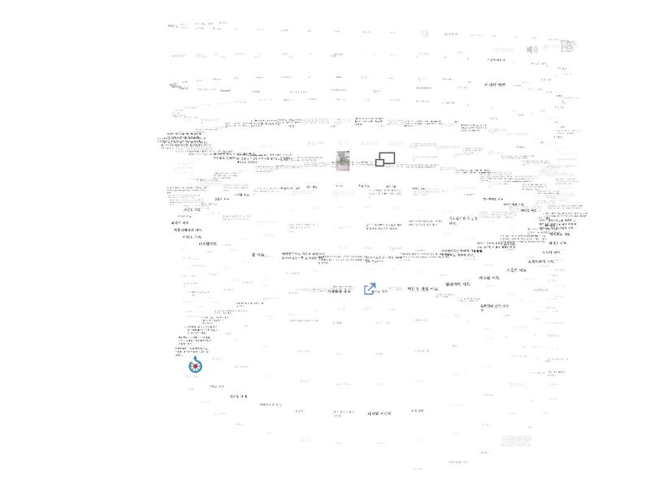
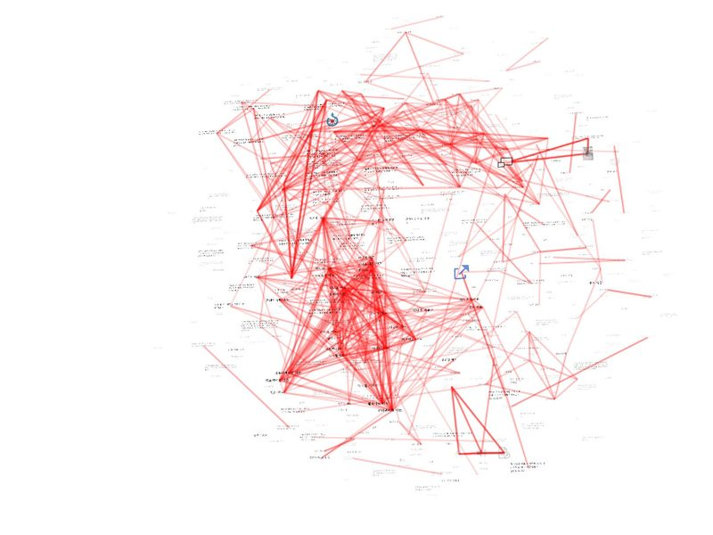
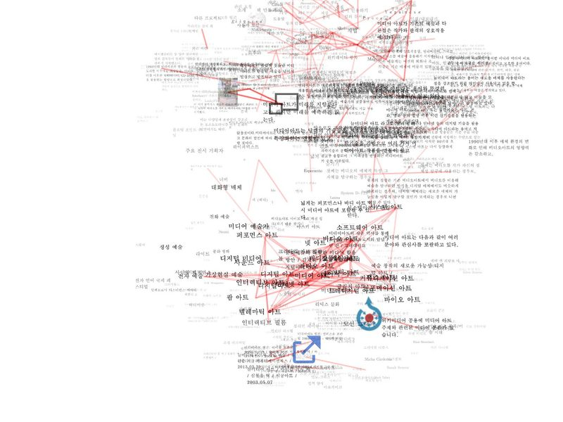
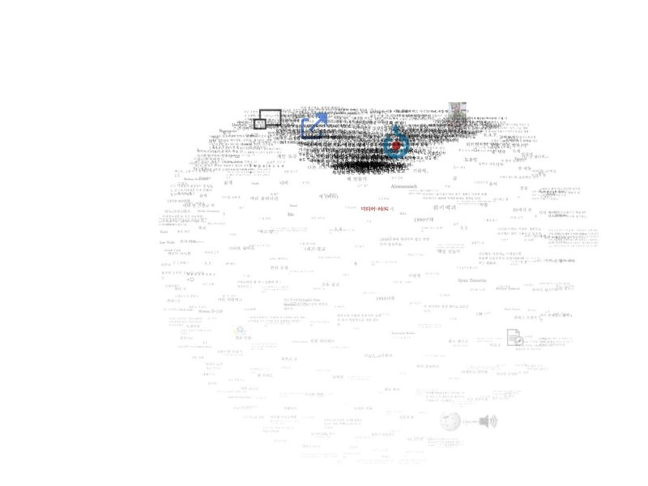

세 가지 보기, 평면과 입체
같은 조각 500개를 여섯 가지로 놓은 실제 화면. 3D 버튼은 지금 보기를 오른쪽 칸으로 바꾼다.
| 2D | 3D | |
|---|---|---|
| 읽는 순서 |  세로 단 문서 순서대로 단을 따라 |
 나선 같은 순서로 감겨 내려감 |
| 상호 유사도 |  스프링 가까운 4개와 당겨져 모임 |
 구름 같은 인력을 3차원으로 |
| 검색어 유사도 |  궤도 가운데에 가까울수록 비슷함 |
 구체 가운데까지 거리가 곧 유사도 |
 1234567
1234567
 12345
12345